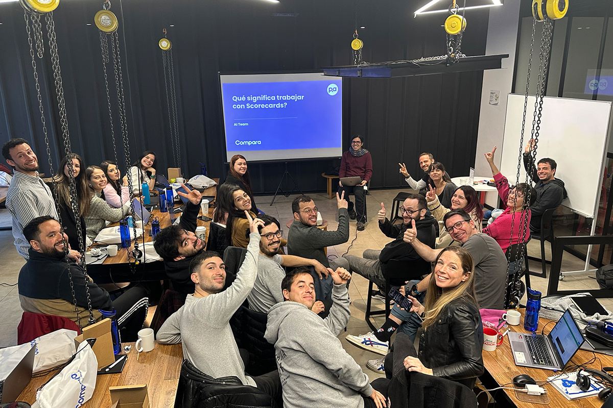
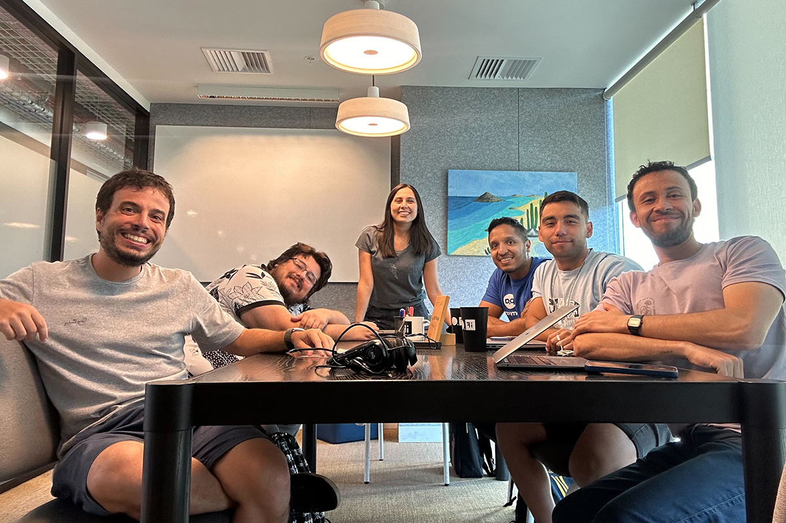

Trabajo con Scorecards y Startups
Agilidad y aprendizaje constante en ComparaOnline
Agilidad y aprendizaje constante en ComparaOnline

¿Cómo trabajan las Startups? Seguramente no hay una sola forma, pero si podemos contarte como lo hace Compara.
Bruno, uno de nuestros comparadores de Brasil, es el CMO o Chief Marketing Officer, nos va a interiorizar en lo que es Scorecards, explicado simple y sencillo para que usted también lo pueda aplicar en su empresa.
En ComparaOnline, como en muchas startups, la búsqueda de crecimiento y adaptación constante es clave. Desde el principio, la cultura ha estado centrada en la innovación y en la flexibilidad para ajustar nuestros métodos de trabajo cuando sea necesario. Siempre estamos abiertos al cambio, y esa agilidad nos permite adaptarnos y optimizar continuamente.
Decidimos implementar Scorecards después de leer el libro Get Scalable de Ryan Deiss. Nos atrajo el enfoque estructurado de Deiss, que incluye reuniones semanales, mensuales y trimestrales para revisar y ajustar los objetivos. Con este sistema, queríamos mejorar la operativa de la compañía, y realmente ha sido un cambio positivo para todos. En marketing, también personalizamos una versión del Scorecard para profundizar en las tareas y métricas del equipo, lo que ha permitido que cada miembro se sienta mucho más alineado con los objetivos generales.

La dinámica del Scorecard implica monitorear un conjunto de indicadores clave y discutirlos regularmente en equipo. Ya teníamos una estructura de OKRs y planificación trimestral, así que integrar estos conceptos fue bastante fluido. Sin embargo, la metodología de Deiss nos ayudó a organizarnos mejor. Nos concentramos cada semana en dos o tres puntos críticos que necesitan atención del equipo de management. Esto ha hecho que seamos más ágiles y enfocados en aprovechar las oportunidades que identificamos en esas revisiones semanales.
En el ambiente dinámico de una startup, la capacidad de alinearse rápidamente y ejecutar estrategias es esencial para el crecimiento. La metodología de Scorecards nos ha facilitado esta coordinación y agilidad, permitiéndonos enfocarnos en nuestras prioridades más importantes y ser mucho más efectivos en la toma de decisiones. Nos ha permitido organizarnos mejor y mantener la vista en los objetivos clave sin perdernos en detalles innecesarios.
Mi consejo sería que vean el Scorecard no como una lista de tareas, sino como una herramienta para potenciar el trabajo en equipo y la adaptación. En ComparaOnline, nos ha ayudado a mantener una visión clara y compartida de nuestras metas. No se trata solo de alcanzar objetivos, sino de construir una cultura de aprendizaje y mejora continua, y creo que esta metodología es un gran paso en esa dirección.
 Actualidad
ActualidadEl recordado programa noventero “Venga Conmigo” marcó a toda una generación en Chile. Su exitoso segmento “Corazones Service” se transformó…
 Actualidad
ActualidadHace aproximadamente 2 meses comenzamos con el cierre de lo que empezó en julio como el “Compariniverse”.
 Actualidad
ActualidadHace unos meses lanzamos Compariniverse: la primera campaña en Chile protagonizada por una celebridad completamente clonada con IA.